Essa previsão vem da Constituição Federal.
Segue o dispositivo em seu artigo 155, §2º, IX, "a", dispõe que o:
Nesse momento, é importante gravar que incide o imposto na entrada de mercadoria ou bens importados do exterior, por qualquer pessoa, sendo irrelevante se é ou não contribuinte habitual.
Já adianto uma pegadinha presente em todas as provas. No caso das importações, o momento da ocorrência do fato gerador difere bastante do local da prestação. E a base de cálculo nas importações de mercadorias é calculada de maneira bem peculiar.
Em momento oportuno faremos uma revisão completa de como o tema importação poderá ser cobrado na prova.
Eu sei que você é ansioso, só a título de informação hein?! (pois estudaremos mais tarde): a definição do local do fato gerador em se tratando de mercadoria ou bem importado do exterior para os efeitos da cobrança do imposto e definição do estabelecimento responsável é o do estabelecimento onde ocorrer a entrada física do bem. Já o momento do fato gerador do ICMS na importação de mercadoria ou bem é do desembaraço aduaneiro.
Veja que o ICMS poderá ser cobrado de qualquer um que importe mercadoria ou bem, qualquer que seja a finalidade.
Se você faz aquela compra naquele site Amazon dos EUA, poderá ser tributado pelo ICMS!
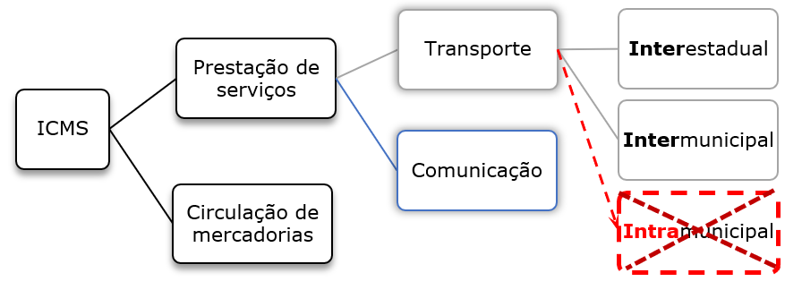
Vamos conhecer os serviços prestados no exterior ou iniciado lá.
II - Sobre o serviço prestado no exterior ou cuja prestação se tenha iniciado no exterior;
Esse dispositivo deve ser interpretado como a autorização para incluir no campo de incidência do ICMS a importação de serviços prestados ou iniciados no exterior.
Incidência na importação: Incide sobre a entrada de bem, ou mercadoria importada do exterior por pessoa física ou jurídica. Ainda que não seja contribuinte habitual do imposto, ele incide qualquer que seja sua finalidade. Também incide sobre o serviço prestado no exterior.
Vamos continuar agora com operações interestaduais que envolvem petróleo e energia elétrica.
| Promover operação mercantil de circulação de mercadorias; | Promover extração, circulação, distribuição ou consumo de minerais. |
| Promover prestação onerosa de serviço de comunicação; | Promover operação de importação de mercadoria ou bem, ainda que destinado ao consumo ou ativo fixo; |
| Promover produção, importação, circulação, distribuição ou consumo de lubrificantes e combustíveis líquidos e gasosos; | Promover produção, importação, circulação, distribuição ou consumo de energia elétrica; |
|
Promover prestação de serviço de transporte
intermunicipal ou interestadual de pessoas ou bens. (Pode também se iniciar no exterior, desde que contratado no Brasil) |
|
Vamos conhecer a previsão da incidência na Lei Kandir das operações interestaduais relacionadas ao petróleo e energia elétrica.
III - sobre a entrada, no território do Estado destinatário, de petróleo, inclusive lubrificantes e combustíveis líquidos e gasosos dele derivados, e de energia elétrica, não destinados à comercialização ou à industrialização, decorrentes de operações interestaduais, cabendo o imposto ao Estado onde estiver localizado o adquirente.
Com efeito, o imposto incide sobre a entrada, no território do estado do destinatário, de petróleo, inclusive lubrificantes e combustíveis líquidos e gasosos dele derivados, e de energia elétrica quando não destinados à comercialização ou à industrialização, decorrentes de operações interestaduais, cabendo o imposto ao Estado onde estiver localizado o adquirente.
Caro aluno, é importante estudar esse dispositivo com a previsão da imunidade constitucional relacionada a esse tema.
Analisamos a imunidade tributária relativa ao ICMS e constatamos a imunidade alcança as operações com petróleo e de energia elétrica quando a saída for interestadual.
No entendimento da Corte Suprema, essa imunidade tributária representa uma norma de não incidência propriamente dita para favorecer o Estado destinatário dos referidos produtos.
De fato, se a saída para outro Estado desses produtos configurasse uma imunidade objetiva, obviamente, eles não poderiam ser tributados por ocasião da entrada no território do Estado destinatário.
O objetivo da não incidência em operações interestaduais é o de beneficiar o Estado consumidor que fica com a faculdade de tributar pela alíquota cheia (alíquota interna), e não o de favorecer o consumidor de combustível.
Pois bem, se a saída é imune, a entrada no estado de destino poderá ou não ser tributada.
A tributação ou não será definida de acordo com a finalidade de quem está realizando a compra.
A lei Kandir, no art. 2° §1º, nos diz que o imposto incide na entrada, no território do Estado destinatário, de petróleo vendido para consumo. Para exemplificar, uma transportadora que compre combustível de distribuidor de outro estado, o imposto caberá ao estado que estiver localizado o comprador.
O mesmo vale para energia elétrica.
Já operações imunes são aquelas em que o combustível derivado do petróleo é vendido entre contribuintes e para posterior comercialização. O mesmo vale para energia elétrica.
Em resumo temos:
- Operações imunes são aquelas em que o combustível derivado do petróleo é vendido entre contribuintes e para posterior comercialização.
- Entretanto a lei, neste item, estabelece que se o combustível for vendido para consumo, por exemplo, uma transportadora que compre combustível de distribuidor de outro estado, o imposto caberá ao estado que estiver localizado o comprador.
- O mesmo vale para energia elétrica.
O legislador nos informa que não importa a natureza jurídica do negócio da operação para a caracterização do FG do ICMS.

Nesse título vamos estudar as operações sobre as quais não incidem o ICMS.
O IMPOSTO NÃO INCIDE sobre:
| I | as operações relativas à circulação de mercadorias, inclusive o fornecimento de alimentação e bebidas em bares, restaurantes e estabelecimentos similares; |
| II | o fornecimento de mercadorias com prestação de serviços não compreendidos na competência tributária dos municípios; |
| III | o fornecimento de mercadorias com prestação de serviços compreendidos na competência tributária dos municípios, com indicação expressa da incidência do ICMS, como definido na Lei Complementar nacional n.º 116, de 31 de julho de 2003, que dispõe sobre o Imposto Sobre Serviços de Qualquer Natureza (ISSQN); |
| IV | – a entrada de mercadoria ou bem importados do Exterior por pessoa física ou jurídica, ainda que não seja contribuinte habitual do imposto, qualquer que seja a sua finalidade; |
| V |
a entrada, neste Estado, decorrente de operação
interestadual, de:
|
| VI | as prestações de serviço de transporte interestadual e intermunicipal, por qualquer via, de pessoas, bens, mercadorias ou valores; |
| VII | as prestações onerosas de serviço de comunicação, por qualquer meio, inclusive a geração, a emissão, a recepção, a transmissão, a retransmissão, a repetição e a ampliação de comunicação de qualquer natureza; |
| VIII | os serviços prestados ou iniciados no exterior; |
| IX | as operações e prestações iniciadas em outra unidade da Federação que destinem bens ou serviços a consumidor final não contribuinte do imposto localizado neste Estado; |
| X | a aquisição, em licitação promovida pelo Poder Público, de mercadorias ou bens importados do exterior, apreendidos ou abandonados. |
Para melhor organização da aula e facilitar sua compreensão, vou te apresentar a não incidência de forma separada, a saber: vamos estudar as não incidências que a lei Kandir repete da constituição federal.
Logo depois, vamos estudar as não incidências previstas na LC 87/96.
Para algumas operações e prestações é constitucionalmente vedada a incidência do ICMS.
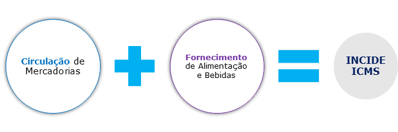
I – livros, jornais, periódicos e o papel destinado a sua impressão.
De fato, a educação é o meio pelo qual um povo se desenvolve. A CF entende isso e imuniza os livros e jornais da cobrança de impostos. Mas veja bem, impostos! Ok?
Quero que fique atento a um fato. As bancas gostam de explorar decisões com repercussão geral em provas de concurso.
No que tange ao ICMS e às demais imunidades tributárias, deve se atentar para a nova súmula vinculante:
- A imunidade tributária constante do artigo 150, VI, "d", da Constituição Federal, aplica-se ao livro eletrônico (e-book), inclusive aos suportes exclusivamente utilizados para fixá-lo.
- A imunidade tributária da alínea "d" do inciso VI do artigo 150 da Constituição Federal alcança componentes eletrônicos destinados exclusivamente a integrar unidades didáticas com fascículos.
II – operações e prestações que destinem ao exterior mercadorias, inclusive produtos primários e produtos industrializados, semi-elaborados, ou serviços.
O dispositivo traz um dispositivo presente na constituição. Tal imunidade está prevista no artigo 155, X, "a", da CF/88.
Com o intuito de estimular as exportações brasileiras, desonerando os produtos brasileiros e tornando-os mais competitivos no mercado externo, a Constituição Federal imunizou essas operações e prestações que destino ao exterior da incidência de qualquer tributo, inclusive do ICMS.
Observe que ela abrange tanto as operações quanto as prestações, hein?
III - operações interestaduais relativas a energia elétrica e petróleo, inclusive lubrificantes e combustíveis líquidos e gasosos dele derivados, quando destinados à industrialização ou à comercialização;
A imunidade analisada pelo STF não se aplica a todo e qualquer derivado de petróleo, mas somente aos combustíveis líquidos, gasosos e lubrificantes.
Podemos citar como exemplo: o STF refutou a tese de que o fato de o polietileno ser derivado do petróleo.
Perceba que não estão beneficiados com a exclusão da incidência do ICMS os lubrificantes e combustíveis que não sejam derivados do petróleo.
IV - operações com ouro, quando definido em lei como ativo financeiro ou instrumento cambial;
A regra é mera reafirmação do que já consta no art. 153, §5.º da CF/88. A regra impede que incida qualquer tributo sobre o ouro, quando o ouro é definido em lei como ativo financeiro ou instrumento cambial, salvo o IOF devido na operação de origem.
Já o inciso V trata da incidência do ISS sobre o valor total da operação, desde que não haja previsão na LC 116/03, possibilitando a incidência do ICMS sobre as mercadorias fornecidas junto com o serviço a ser prestado.

V - operações relativas a mercadorias que tenham sido ou que se destinem a ser utilizadas na prestação, pelo próprio autor da saída, de serviço de qualquer natureza definido em lei complementar como sujeito ao imposto sobre serviços, de competência dos Municípios, ressalvadas as hipóteses previstas na mesma lei complementar;
Essa hipótese de não incidência prevista na lei Kandir prevê que a utilização das mercadorias com a prestação de serviço é totalmente tributada pelo ISS, quando essas mercadorias são fornecidas pelo próprio autor da saída e não há previsão de incidência do ICMS na LC 116/2003.
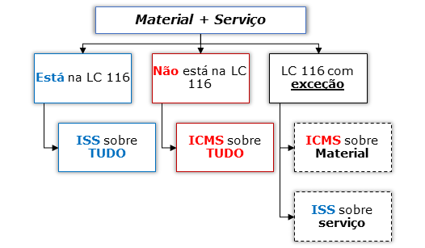
Vamos agora para mais previsões da não incidência do imposto que estão presentes na LC Lei Kandir.
VI - operações de qualquer natureza de que decorra a transferência de propriedade de estabelecimento industrial, comercial ou de outra espécie;
Vale lembrar que incide o fato gerador do ICMS quando a mercadoria efetivamente muda de titularidade, passando da propriedade de uma sociedade para a da nova sociedade. Porém, quando há operação de circulação de mercadoria decorrente da transferência de propriedade de estabelecimento industrial, comercial ou de outra espécie não há incidência do ICMS.
Perceba que o dispositivo trata da situação que não houve circulação da mercadoria. Houve apenas uma simples translação de propriedade, podendo ser resultante da incorporação de uma sociedade A pela sociedade B. Daí resulta que a operação em causa não se caracteriza como fato gerador do imposto.
Perceba que há uma circulação jurídica da mercadoria (alteração da titularidade do proprietário), porém, o legislador não abarcou essa situação no campo de incidência do ICMS.
As transferências de estoque quando uma firma adquire outra firma (fusão, transformação, incorporação ou cisão) ficam sem sofrer a incidência do ICMS.
Vamos continuar!!!
VII - decorrentes de alienação fiduciária em garantia, inclusive a operação efetuada pelo credor em decorrência do inadimplemento do devedor;
O negócio jurídico da alienação fiduciária em garantia tem por finalidade garantir o pagamento de determinada dívida pertencente ao devedor fiduciante, que detém a posse direta do bem sob condição resolutiva de saldar a dívida garantida.
Nesse tipo de negócio jurídico, nenhuma das operações será tributada com o ICMS, caro aluno.
Perceba que o pagamento da dívida, cessando o contrato de alienação fiduciária em garantia, e o do não pagamento da dívida no prazo estabelecido, ocasionando a transferência do bem ao credor fiduciário não incide o ICMS.
Já o inciso VII trata dos casos de arrendamento mercantil, também conhecido como leasing.
VIII - Operações de arrendamento mercantil, não compreendida a venda do bem arrendado ao arrendatário;
A operação de venda de um bem que será objeto de arrendamento mercantil é fato gerador do ICMS. Mas a operação de arrendamento propriamente dita não é. Em geral, é essa distinção que gera muitas dúvidas.
Vou exemplificar com o grande Pedro Henrique. Pedro Henrique vai a concessionária comprar uma moto financiada. Depois de analisar todas as possibilidades, Pedro resolve fazer a operação por meio de leasing.
Na operação de saída da moto da concessionária, incidirá o ICMS.
Perceba que o bem será de Pedro Henrique, correto? Porém, no documento da moto, como se proprietário fosse, aparecerá o nome do banco.
Preste atenção agora. A moto foi financiada pelo Pedro e em momento posterior, pode ocorrer uma das hipóteses e nas duas não ocorrerá incidência do ICMS.
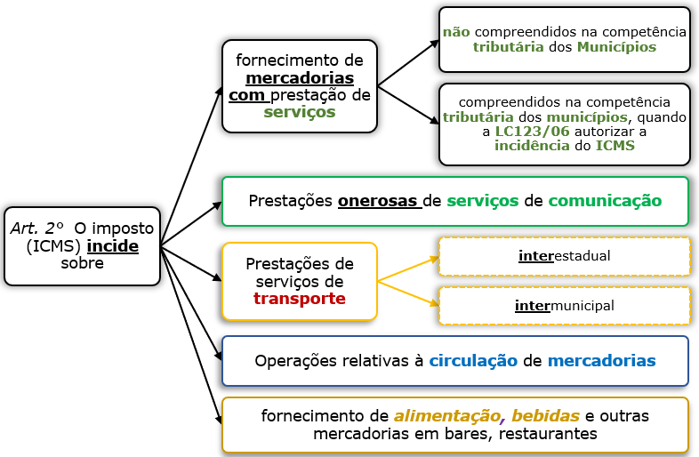
Por fim, o inciso IX nos fala das hipóteses de não-incidência do ICMS quando da transferência de propriedade para as companhias seguradoras de bens salvados de sinistro.
IX - operações de qualquer natureza de que decorra a transferência de bens móveis salvados de sinistro para companhias seguradoras.
Imagine que Pedro Henrique teve sua moto destruída. A seguradora, ao avaliar os estragos, decide pela perda total do automóvel. A indenização do seguro será paga mediante transferência dos "restos" do automóvel para a seguradora. Nessa operação não incide ICMS.
Preste atenção aluno! A legislação determina a não incidência do ICMS nas operações de qualquer natureza de que decorra a transferência de bens móveis salvados de sinistros para companhias seguradoras.
- Operação de saída da empresa seguradora — Súmula vinculante 32: O ICMS não incide sobre alienação de salvados de sinistro pelas seguradoras. Realmente não incide ICMS porque constituem recuperação de receitas e não atividade mercantil.
- Operação de entrada na empresa seguradora — Art. 3º, IX: operações de qualquer natureza de que decorra a transferência de bens móveis salvados de sinistro para companhias seguradoras. ICMS não incide.
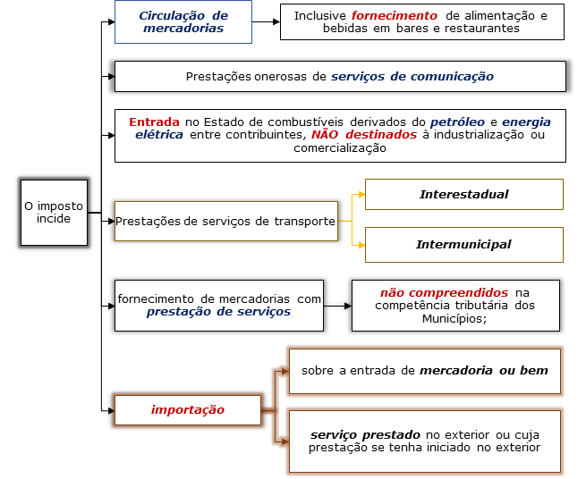
Em decorrência das suas especificidades e características, a energia elétrica encontra-se em permanente circulação (fato gerador do ICMS) nos fios de transmissão da concessionária, sendo que ela somente será individualizada, ou seja, só terá caracterizado e definido seu usuário, no momento em que for utilizada, pois, até então, consiste numa massa única de energia passível de utilização por qualquer um que dela necessite.
O ICMS sobre energia elétrica tem como fato gerador a circulação da mercadoria, e não do serviço de transporte de transmissão e distribuição de energia elétrica, incidindo, in casu, a Súmula 166/STJ.
Dessa forma, para evitar mais discussões judiciais sobre o tema e com intuito de diminuir dos Encargos Setoriais na conta de energia elétrica os custos não gerenciáveis suportados pelas concessionárias de distribuição e transmissão, como exemplo o imposto ICMS cobrados nos serviços de transmissão e distribuição e encargos setoriais, cujo repasse aos consumidores é decorrente da garantia do equilíbrio econômico-financeiro contratual.
X - serviços de transmissão e distribuição e encargos setoriais vinculados às operações com energia elétrica.
Não esqueça dessas imunidades constitucionalmente previstas.
X - Nas prestações de serviço de comunicação nas modalidades de radiodifusão sonora e radiodifusão de sons e imagens de recepção livre e gratuita;
Obs.: a cobrança do ICMS sobre a prestação do serviço de comunicação somente faz sentido quando é feita a título oneroso.
- Os serviços de radiodifusão sonora => Rádio
- Os serviços de radiodifusão de sons e imagens => Televisão
- Apenas a recepção livre e gratuita (Rádio e TV abertas) é imune.
Prestação de serviço de transporte ou comunicação prestado pela:
- (1ª) União, Estados, DF e Municípios.
- (2ª) Assistência social, educacionais, partidos políticos, sindicatos, no desempenho de suas finalidades.
Você deve sempre ter em mente que essa imunidade se restringe aos impostos sobre patrimônio, renda ou serviços. Já as operações com mercadorias do setor público são cobradas o imposto ICMS.
Em regra, as prestações são imunes ao ICMS e as operações com mercadorias cabem tributação do ICMS.
Vamos relembrar as imunidades cultural e fonográfica. Livros e relacionados, fonogramas e videofonogramas brasileiros são imunes ao ICMS.
Desse modo, fica vedada a cobrança de impostos (e apenas dessa espécie tributária) sobre os fonogramas e videofonogramas musicais produzidos no Brasil contendo obras musicais ou literomusicais de autores brasileiros e/ou obras em geral interpretadas por artistas brasileiros bem como os suportes materiais ou arquivos digitais que os contenham, salvo na etapa de replicação industrial de mídias ópticas de leitura a laser. A vedação alcança tanto os impostos já criados quanto os que vierem a serem criados.
A Lei Kandir no inciso II do seu artigo 3º, cuida da não-incidência do ICMS nas operações e prestações que destinem serviços e produtos industrializados, semi-elaborados e primários para o exterior.
Agora no parágrafo único a lei Complementar prevê que, para efeito da referida desoneração, equipara-se a uma saída para o exterior à remessa de mercadoria realizada com o fim específico de exportação, através de comercial exportadora, inclusive trading, dentre outras.
I - empresa comercial exportadora, inclusive tradings ou outro estabelecimento da mesma empresa;
II - armazém alfandegado ou entreposto aduaneiro.
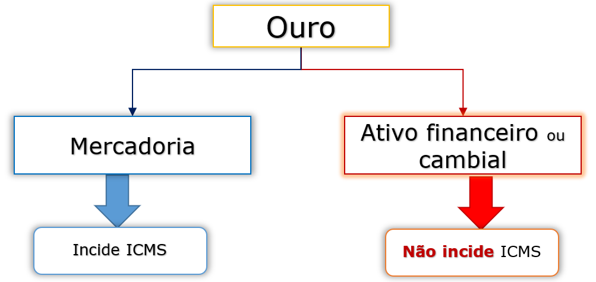
Caso a venda seja para empresa comercial exportadora, tradings, armazém alfandegado ou entreposto aduaneiro, não incide ICMS. É equivalente a exportar.
Quando um estabelecimento remete mercadorias à uma empresa comercial exportadora (inclusive trading ou outro estabelecimento da mesma empresa), a um armazém alfandegado ou a um entreposto aduaneiro, essa operação equipara-se a uma exportação, sendo alcançada pela imunidade.
Veja que esses destinatários (empresa comercial exportadora, um armazém alfandegado ou um entreposto aduaneiro) funcionam como simples intermediários, cujo objetivo final é efetivar a exportação.
Caro aluno, caso a empresa comercial exportadora, um armazém alfandegado ou um entreposto aduaneiro, não exporte a mercadoria e a reintroduza essa mercadoria no mercado interno será devido o ICMS.
Qualquer saída da mercadoria da empresa comercial exportadora, recebida com o fim específico de exportação, que não seja para o exterior, configurará sua reintrodução no mercado interno, devendo nesse caso ser recolhido o imposto.
Chegamos no aspecto temporal do fato gerador do ICMS.
Ao final dessa aula, você deve ter a certeza que já sabe diferenciar o local do fato gerador e o momento do fato gerador.
O aspecto temporal diz respeito ao momento em que se considera consumado o fato gerador do imposto, pois é neste exato instante que a obrigação tributária nasce. Quanto ao aspecto temporal do ICMS, considera-se o momento da ocorrência do fato gerador, ou seja, o momento pelo qual algo se consumou.
Sendo assim, você deve entender os dispositivos da lei kandir e fazer bastante questões para não se enrolar na data da prova.
Resumidamente, temos 6 tipos de fatos geradores no ICMS.
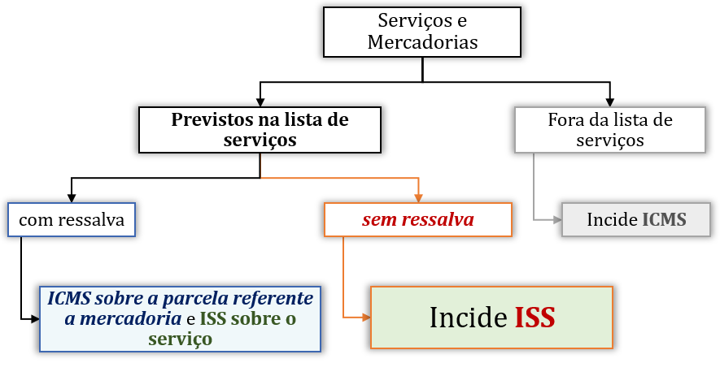
Arrendamento Mercantil (ou Leasing)
É a modalidade de negócio jurídico estabelecida por meio de formato triangular dos
sujeitos da relação,
ao envolver um intermediário – o agente financiador da operação entre as partes, um
arrendante e um
arrendatário, e conferir ao arrendatário três possibilidades.
Na prática do mercado, há de se distinguir basicamente três formas de aparecer leasing na sua prova: leasing interno (operacional ou financeiro), o leaseback e leasing internacional.
Nas provas, adote as seguintes premissas:
- Nas operações de leasing interno, seja operacional ou seja financeiro, não há a incidência do ICMS, salvo quando efetivada a venda do bem arrendado ao arrendatário.
- Nas operações de leaseback não há a incidência do ICMS.
- Na importação realizada mediante operação leasing internacional, não incide o ICMS, salvo se houver exercício da opção de compra pelo arrendatário, tornando a mercadoria insuscetível de devolução ao arrendador.
O ICMS e o Fornecimento de Água
Para o STF o fornecimento de água potável por empresas concessionárias desse serviço
público não é
tributável por meio do ICMS.
Não se pode confundir o serviço público adstrito ao fornecimento de "água natural encanada" ("canalizada" ou "tratada") com a venda de água envasada, aqui sim, uma mercadoria passível de circulação. Este último com incidência do ICMS. Beleza?
O fornecimento de água potável por empresas concessionárias desse serviço público não é tributável por meio do ICMS. As águas em estado natural são bens públicos e só podem ser exploradas por particulares mediante concessão, permissão ou autorização. O fornecimento de água tratada à população por empresas concessionárias, permissionárias ou autorizadas não caracteriza uma operação de circulação de mercadoria.
O ICMS incide sobre todo o processo de fornecimento de energia elétrica, tendo em vista que as fases de geração, transmissão e distribuição da energia são indissociáveis.
O ICMS incide sobre todo o processo de fornecimento de energia elétrica, tendo em vista a indissociabilidade das suas fases de geração, transmissão e distribuição, sendo que o custo inerente a cada uma dessas etapas entre elas a referente à Tarifa de Uso do Sistema de Distribuição (TUSD) compõe o preço final da operação e, consequentemente, a base de cálculo do imposto, nos termos do art. 13, I, da Lei Complementar n. 87/1996.
A peculiar realidade física do fornecimento de energia elétrica revela que a geração, a transmissão e a distribuição formam o conjunto dos elementos essenciais que compõem o aspecto material do fato gerador, integrando o preço total da operação mercantil, não podendo qualquer um deles ser decotado da sua base de cálculo, sendo certo que a etapa de transmissão/distribuição não cuida de atividade meio, mas sim de atividade inerente ao próprio fornecimento de energia elétrica, sendo dele indissociável.
A abertura do mercado de energia elétrica, disciplinada pela Lei n. 9.074/1995 (que veio a segmentar o setor), não infirma a regra matriz de incidência do tributo, nem tampouco repercute na sua base de cálculo, pois o referido diploma legal, de cunho eminentemente administrativo e concorrencial, apenas permite a atuação de mais de um agente econômico numa determinada fase do processo de circulação da energia elétrica (geração).
A partir dessa norma, o que se tem, na realidade, é uma mera divisão de tarefas de geração, transmissão e distribuição entre os agentes econômicos responsáveis por cada uma dessas etapas, para a concretização do negócio jurídico tributável pelo ICMS, qual seja, o fornecimento de energia elétrica ao consumidor final.
Por outro lado, o mercado livre de energia elétrica está disponibilizado apenas para os grandes consumidores, o que evidencia que a exclusão do custo referente à transmissão/distribuição da base de cálculo do ICMS representa uma vantagem econômica desarrazoada em relação às empresas menores (consumidores cativos), que arcam com o tributo sobre o "preço cheio" constante de sua conta de energia, subvertendo-se, assim, os postulados da livre concorrência e da capacidade contributiva.
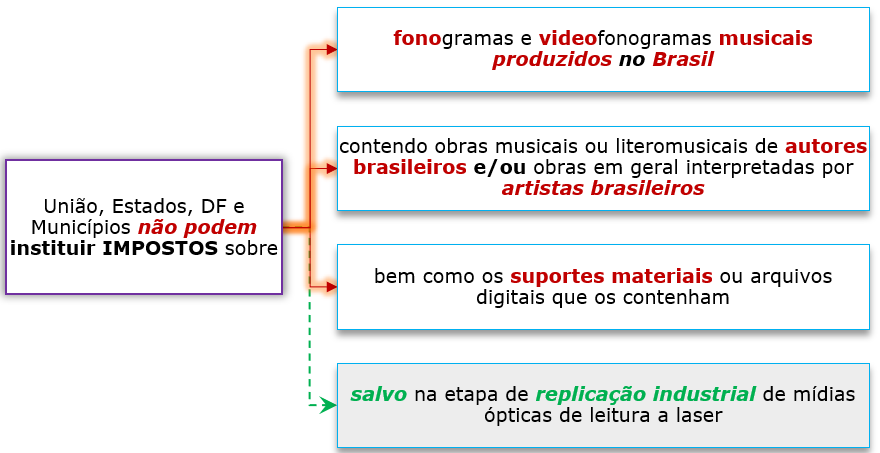
A expressão "estabelecimento destinatário da mercadoria" vem sendo interpretada pela doutrina e pela jurisprudência como "estabelecimento do importador".
O importador, por sua vez, é definido como aquele que realiza o negócio internacional, paga o preço combinado, assume direitos e obrigações, realiza o desembaraço aduaneiro.
Segundo Roque Carrazza, o local do desembaraço da mercadoria é irrelevante para caracterizar a titularidade ativa do ICMS na importação, sendo devido o ICMS ao "Estado-membro onde está situado o estabelecimento importador do bem, ainda que o desembaraço se dê em outro Estado-membro." (ICMS, 4a. ed. pag. 54).
De acordo com a doutrina, a entrada física da mercadoria prevista no artigo 11, I, d, da LC 87/96 perde significado se ela não ocorrer no estabelecimento destinatário da mercadoria, ou seja, no estabelecimento do importador. Do mesmo modo, a venda posterior da mercadoria, ainda que em operação triangular, ou seja, com entrega direta ao comprador, não interfere na sujeição ativa, que continua sendo do Estado onde tem domicílio o importador.
Analisando os precedentes do Supremo Tribunal Federal verifica-se que a Corte entende que:
- a) Quando a Constituição menciona que cabe o ICMS ao Estado onde estiver o estabelecimento do destinatário da mercadoria, nada mais faz do que afirmar que o referido imposto é devido ao Estado em que se situe o estabelecimento importador.
- b) No caso da importação, o critério de entrada física da mercadoria previsto na LC 87/96 perde significado se ela não ocorrer no estabelecimento destinatário da mercadoria, ou seja, no estabelecimento do importador, e somente prevalece enquanto não contrariar o critério jurídico indicado pela Constituição Federal.
- c) A venda posterior da mercadoria, ainda que em operação triangular, ou seja, com entrega direta ao comprador não interfere na sujeição ativa, que continua sendo do Estado onde tem domicílio o importador.
- d) O importador é aquele que efetivamente adquire a mercadoria no exterior de uma empresa estrangeira (efetua o pagamento com seus recursos, negocia com a empresa alienígena, etc.).
- e) Quando uma trading participa de uma operação de importação agindo como mera consignatária e representante dos interesses do adquirente dos bens importados, sem assumir qualquer responsabilidade pela negociação, pagamento dos produtos, impostos e demais custos, o ICMS é devido ao Estado onde se situa o adquirente da mercadoria, vale dizer, o destinatário das mercadorias importadas.
Vamos ampliar nosso estudo sobre a importação por encomenda e por conta e ordem de terceiro.
Ampliando o estudo do 2º Caso – A trading efetivamente adquire a mercadoria no exterior de uma empresa estrangeira (efetua o pagamento com seus recursos, negocia com a empresa alienígena).
Temos então uma operação de importação por encomenda realizada por trading company, o ICMS é devido para o estado de localização da trading.
E isto porque, a importação por encomenda, nada mais é do que a importação de mercadorias por empresa importadora (trading), para futura comercialização à empresa encomendante.
Vale dizer, a trading realiza a compra de mercadorias do fornecedor estrangeiro (conta própria), com o comprometimento de vendê-las à empresa encomendante.
Assim a trading enquadra-se como o contribuinte que adquiriu a mercadoria, ou seja nessa hipótese a trading é o importador (contribuinte que adquiriu a mercadoria no exterior).
O mesmo raciocínio deve ser empregado para as operações por conta própria realizada por trading, que é a operação na qual o importador (empresas trading/comerciais importadora), com recursos próprios, compra produtos de outrem no exterior e depois de sua nacionalização, os revende no mercado interno para outra pessoa jurídica, respondendo por todos os tributos devidos na importação e na saída dos produtos internamente.
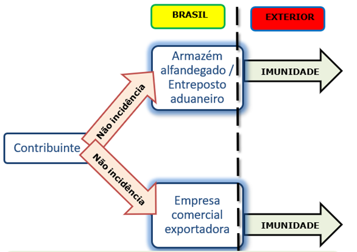
Ampliando o estudo do 3º Caso – Quando uma trading participa de uma operação de importação agindo como mera consignatária e representante dos interesses do adquirente dos bens importados, sem assumir qualquer responsabilidade pela negociação.
Já nas operações por Conta e Ordem de Terceiros, que é aquela em que a trading company realiza a importação com recursos de terceiro na qualidade de mandato, ou seja, é contratada para fazer apenas o despacho aduaneiro – o Estado do adquirente verdadeiro (contribuinte que adquiriu a mercadoria no exterior) é quem pode cobrar o imposto.
Assim, o ICMS é devido ao Estado do adquirente que é o verdadeiro importador e é quem deve pagar o ICMS.
E por fim temos outra questão que o STF analisou no ARE 665134 é a situação de mercadorias importadas por um estado da federação, industrializadas em outro estado da federação e que retornam ao primeiro para comercialização.
O julgado definiu que o sujeito ativo da operação é o estado onde foram industrializadas as mercadorias.
Segundo o Ministro Edson Fachin: "verifica-se que a destinação da mercadoria importada como matéria-prima para a produção de defensivos agrícolas é elemento definidor da fixação do sujeito ativo da obrigação tributária. Isto porque o negócio jurídico em tela tem como vetor a industrialização, por sua vez levada a efeito na territorialidade da parte Recorrida, o Estado de Minas Gerais".
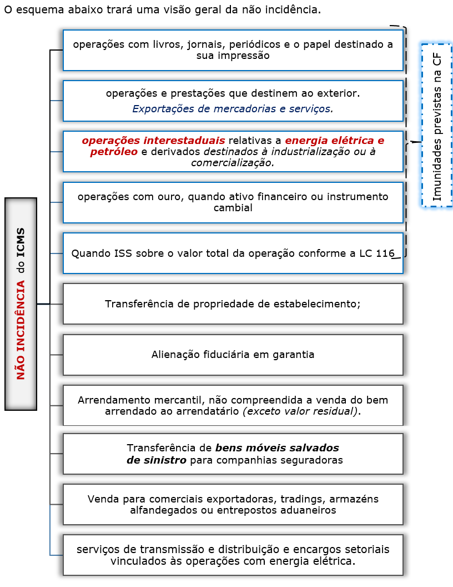
Vamos para a análise sobre a incidência de tributação sobre as operações de roaming Internacional, consistente na prestação de serviços entre operadoras de telefonia que cedem suas redes para utilização alheia.
O serviço de roaming compreende a interconexão de redes das operadoras brasileiras de serviço móvel celular com as redes das operadoras estrangeiras, possibilitando o uso dos celulares no país e no exterior.
A sua existência justifica-se pela necessidade dos usuários de usar os aparelhos de telefonia em áreas não cobertas originalmente pela operadora contratada, distinguindo-se entre as operações "entrantes" e "saintes".
Esse roaming pode acontecer de duas maneiras: a primeira seria o caso em que a operadora estrangeira utilizada a estrutura da rede de operadora de telefonia brasileira para efetuar e receber ligações locais no Brasil. Nesse caso, temos uma exportação de um serviço, sendo imune ao ICMS.
Já o contrário, quando a operadora no Brasil se utiliza da rede da operadora no exterior, para possibilitar a ligação feita por um usuário cliente da operadora brasileira está sujeita ao ICMS.
1) Nas operações de roaming "entrante" (clientes de outras operadoras visitando o Brasil), a operação é imune, tanto ao ICMS, quanto às contribuições para PIS, COFINS, FUST e FUNTEL.
Neste caso, a determinação constitucional é expressa no sentido de não incidência do imposto e das contribuições, pois a operação se trata de exportação de serviço.
2) Nas operações de roaming "sainte" (clientes de operadoras brasileira em viagem a outros países), tendo em vista o pagamento pelo usuário de todos os custos com a operação, há autorização para incidência do ICMS com recolhimento ao Estado onde situado o domicilio do tomador do serviço.
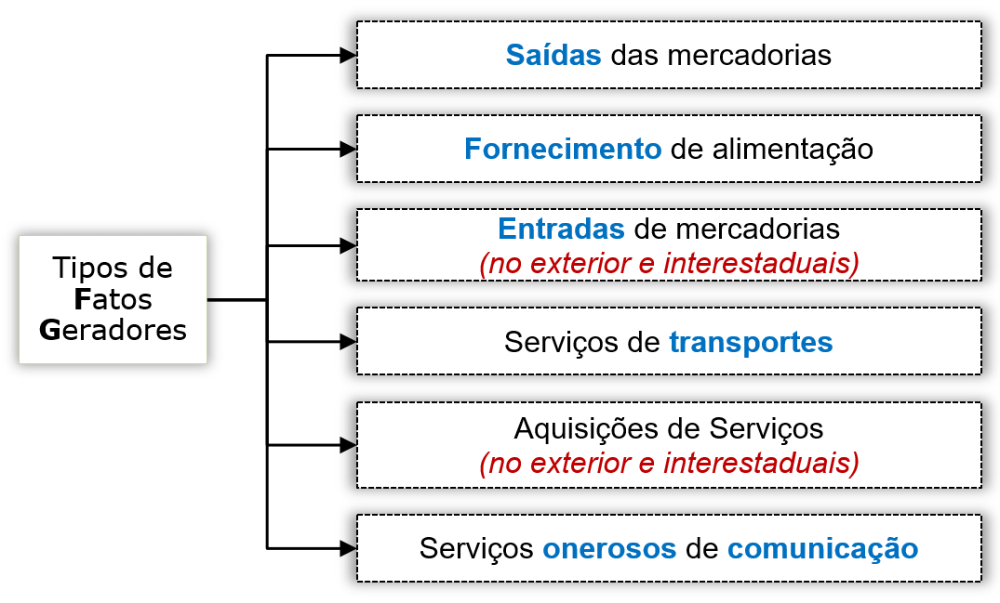